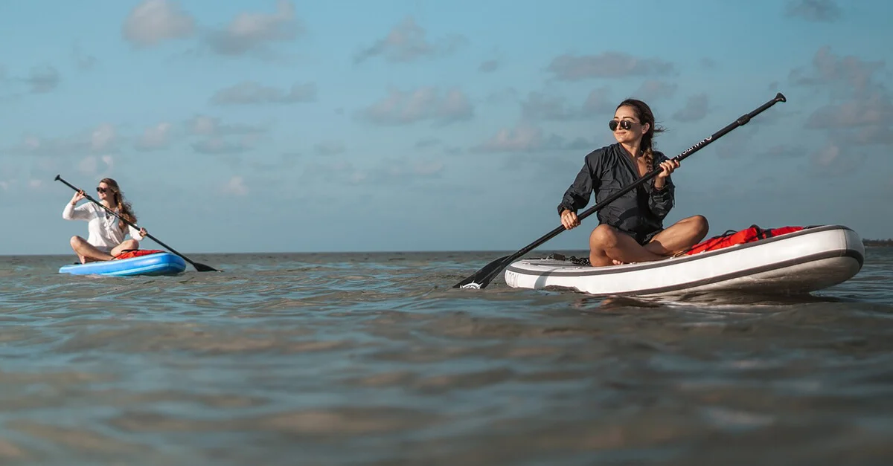
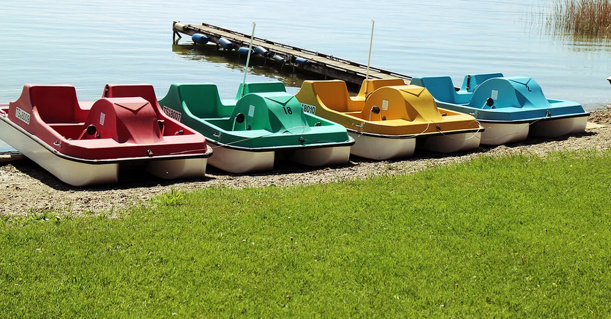
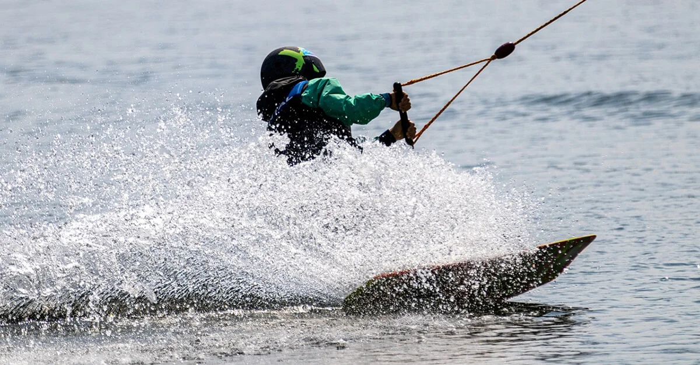
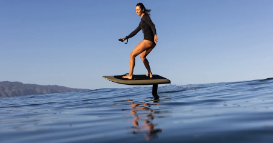
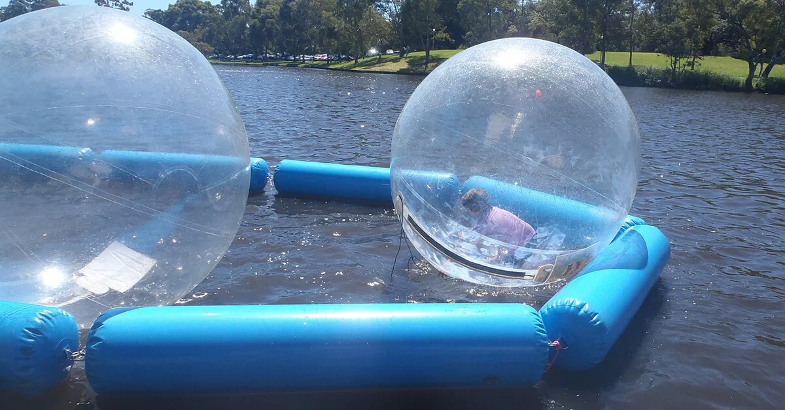
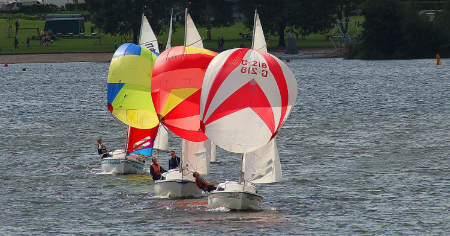
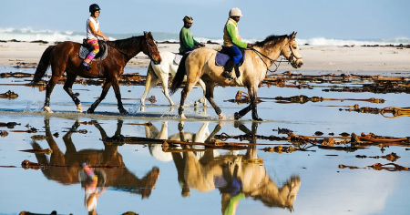
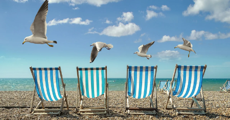

Les nostres activitats estan adaptades a tots els públics, de totes les edats, tant individuals com per a grups i desitgeu fer una activitat tots junts (equips d'empreses, escoles i col·legis, hotels, casals d’estiu, comiats de solter, operadors turístics, agències de viatges o grups d’amics) .
Atreveix-te a provar les nostres activitats de lleure a l’aire lliure i gaudiu de la mar, de l'hàbitat natural, del descobriment i viure l’aventura !

Caiac
Vine i navega amb caiac tot l’any a La Cabanya !Posem a la teva disposició el material necessari perquè navegues amb tranquil·litat i conegues la nostra badia. T'indicarem la zona de seguretat recomanada en funció de les condicions meteorològiques.Tots els nostres caiacs són autobuidables i insubmergibles.Podeu navegar amb individual, doble, triple o quàdruple (2 adults + 2 infants).Edat: menors de 12 acompanyats d’un tutor legal.En funció del vostre nivell, us podem aconsellar les rutes més adequades.QUÈ CAL PORTAR ?Banyador, Samarreta sintètica o licra, Protector solar, Calçat que es pugui mullar, Aigua i Roba de recanvi.
Consultar les tarifes

Caiac Pesca
Si la vostra afició és pescar, tenim caiacs confortables preparats per a l'activitat amb canyers, respatllers i pots estancs.Només has de portar la teva canya, el teu esquer, els teus utensilis i els consumibles de recanvi per a una bona pesca.Les autoritats, eventualment, poden demanar-vos la vostra llicència de pesca.CONSELL :De matí manyana és el millor moment per gaudir de la pesca, els peixos estan famolencs després de la nit, la mar està molt plana gairebé sense onatge, el sol encara no pica molt i els vents solen ser molt suaus.
Consultar les tarifes

Paddle Surf
Vine i navega amb paddle tot l’any a La Cabanya !Posem a la teva disposició el material necessari perquè navegues amb tranquil·litat i conegues la nostra badia. T'indicarem la zona de seguretat recomanada en funció de les condicions meteorològiques.Tots les nostres planxes són insubmergibles.Ideal per practicar en grup el Paddle Ioga.Podeu navegar amb individual o en grup amb el nostre Paddle XXL.Edat: menors de 12 acompanyats d’un tutor legal.En funció del vostre nivell, us podem aconsellar les rutes més adequades.QUÈ CAL PORTAR ?Banyador, Samarreta sintètica o licra, Protector solar, Calçat que es pugui mullar, Aigua i Roba de recanvi.
Consultar les tarifes

Pedalos
Dirigits a tota mena de persones, els pedalos o hidropedals són embarcacions impulsades per pedals que permeten navegar a prop de la costa, relaxar-se i gaudir prenent el sol mentre es contempla el paisatge des d'una embarcació molt estable. És una activitat que es pot desenvolupar en grup o individualment. Només cal un banyador, una bona protecció solar i un pedaleig suau i uniforme.Una bona opció per passar una bona estona amb família per fer temps i gana per a quan arribi la paella o la fideuada.Vine i navega amb pedalo tot l’any a La Cabanya !
Consultar les tarifes

Wakeboard
Si t'agrada sentir l'adrenalina, al nostre Wake Parc tenim diferents recorreguts, amb 3 línies que s'adapten a tots els nivells per gaudir d'una bona experiència.· LÍNIA 1 - INICIACIÓ : 70 metres de línia per a la teva iniciació amb el wakeboard, aquesta línia també disposa de diversos mòduls bàsics.· LÍNIA 2 - AFICIONAT : 120 metres de línia, 25 metres d'amplada, dos kickers, un doble up pla de 7 metres de llarg, un flatbar de 12 metres de llarg i 70 centímetres d'alçada, tot pensat perquè gaudeixis d'un bon jibbing.· LÍNIA 3 - LITTLE POOL : 32 metres de piscina superior amb platja per a una bona arrencada i 70 metres de piscina inferior. Podreu gaudir de dos rails de 14 metres i 3,5” de passamà d'inox, per als riders més experimentats.
Consultar les tarifes

eFoil
T'imagines la sensació de volar per damunt l'aigua ? Doncs ara ho pots fer realitat amb l'eFoil.En què consisteix ? El Foil és una modalitat d'esport nàutic que consisteix a volar navegant sobre l'aigua. L'eFoil és una planxa amb un motor elèctric i pot assolir uns 40 km per hora, controlada mitjançant un comandament a distància.Quan estàs volant a l'eFoil sents silenci a l'aigua, sense fricció, i això genera una sensació de pau, llibertat i independència que no et proporcionen altres esports nàutics. Qualsevol moment de l'any (inclòs l'hivern) és bo per practicar la modalitat d'eFoil, l'important és anar ben equipat amb una combinació de neoprè i un casc confortable que suri.Atreveix-te a volar, et sentiràs lliure !
Consultar les tarifes

Multi-Aventura Aquàtica
Gaudeix i refresca't amb la nostra multiaventura aquàtica amb activitats variades súper divertides i molt fresquetes perquè gaudeixis de l'estiu mentre et diverteixes.La canalla s'ho passarà pipa, no voldran sortir de l'aigua !
Consultar a la barra les tarifes i disponibilitat

Vela Lleugera
La nostra badia és un paradís per a la pràctica de la vela lleugera amb una navegació segura i vents portants que sempre t'empenyen cap a un punt de terra ferma. Sentir-se empès per les forces de la natura et despertarà sensacions a flor de pell.Embarqueu-vos a l'aventura amb aquesta activitat, us convertireu en explorador d'espais naturals dels Alfacs.
Consultar a la barra les tarifes i disponibilitat

Excursions a Cavall
Una trobada sublim amb la natura: Sent la connexió amb el mar i els cavalls a les nostres excursions de platja.Viu la passió de la platja a cavall : Un passeig inoblidable on el sol, la sorra i el mar es fusionen amb l'elegància del pas a cavall.Converteix els teus somnis en empremtes a la sorra : Descobreix la felicitat de muntar a cavall a la costa, on l'aventura es barreja amb la tranquil·litat.Una travessia màgica cap a la plenitud : Viu l'experiència inigualable de cavalcar per la platja, un instant etern de connexió amb la natura.
Consultar a la barra les tarifes i disponibilitat

Hamaking
Una activitat d'alt risc, però apta per a tots els públics, sobretot per als que ja tenim una edat.Després d'un matí de platja amb moltes activitats i d'haver engolat un bon àpat, desitjaràs agenciar-te una hamaca per pair-ho tot sota l'ombra dels arbres. Correràs un gran risc de fer una bona migdiada i no voler marxar.Pots escollir entre l'hamaking o la zona chillout per reposar el teu esperit.Bon repòs !
Activitat gratuita que t'oferim a La Cabanya
Llista de preus
- Caiac individual
- 1 h. ... 10€
- 2 h. ... 13€
- 3 h. ... 15€
- Caiac doble/triple
- 1 h. ... 15€
- 2 h. ... 20€
- 3 h. ... 25€
- Paddle Surf
- 1 h. ... 10€
- 2 h. ... 15€
- 3 h. ... 20€
- Paddle XXL · 1 h. ... 60€
- Pedalos
- 1 h. ... 20€
- 2 h. ... 30€
- 3 h. ... 40€
Llista de preus
- Wakeboard
- 15 min. línia ... 20€ + material ... 5€
- 30 min. línia ... 30€ + material ... 10€
- 60 min. línia ... 50€ + material ... 15€
- Cursos eFoil
- 30 min. ... 45€
- 1 h. ... 70€
- 2 h. ... 110€
- Altres Activitats
- Reserves
- Caiac, Paddle Surf i Pedalos +34 977 74 02 92
- Wakeboard +34 621 20 24 50
- eFoil +34 644 73 36 69